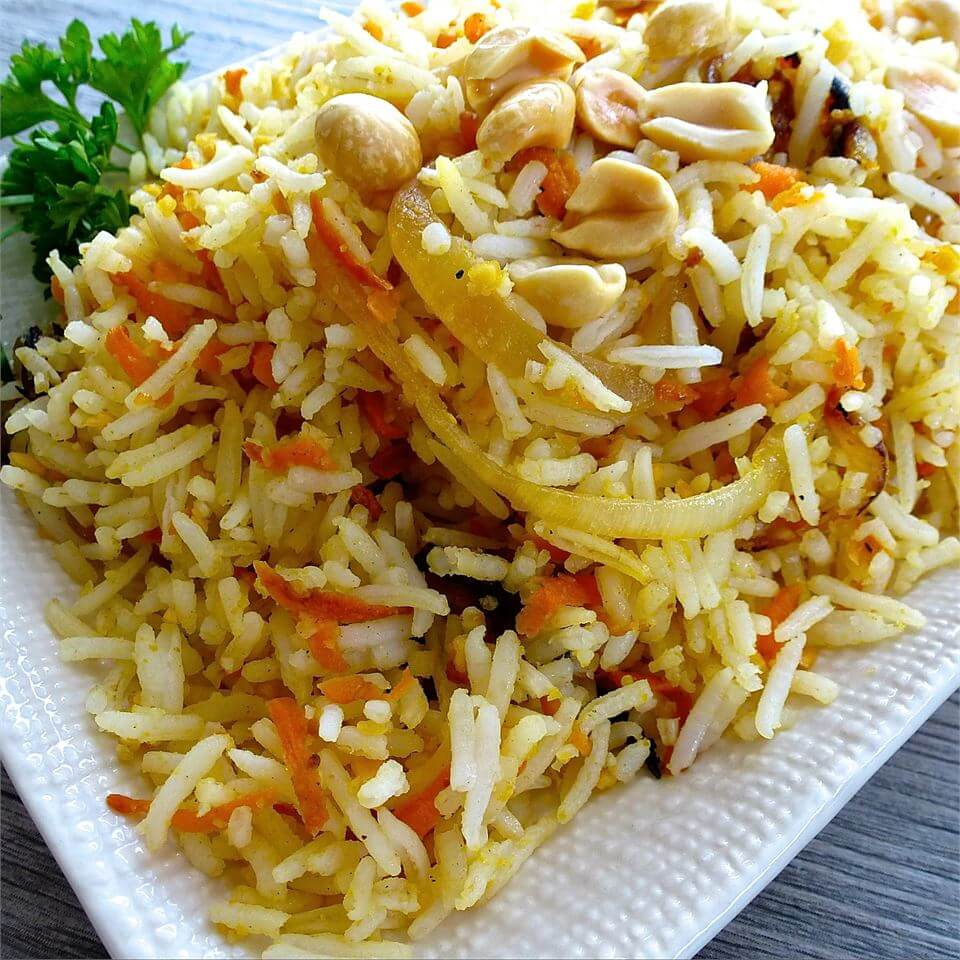

Carrot Rice

Delicious and easy
Fragrant basmati rice sauteed with carrots, onions, fresh ginger,
peanuts, and cilantro. You will be surprised to taste this delicious
rice.
Ingredients
- 1 cup (128g) basmati rice
- 2 cups (473ml) water
- ¼ cup roasted peanuts
- 1 tablespoon margarine
- 1 onion, sliced
- 1 teaspoon minced fresh ginger root
- ¾ cup (150g) grated carrots
- salt to taste
- cayenne pepper to taste
- chopped fresh cilantro
Steps
-
Combine rice and water in a medium saucepan. Bring to a boil over high
heat. Reduce heat to low, cover with lid, and allow to steam until
tender, about 20 minutes.
-
While rice is cooking, grind peanuts in a blender and set aside. Heat
the margarine in a skillet over medium heat. Stir in the onion; cook
and stir until the onion has softened and turned golden brown about 10
minutes. Stir in ginger, carrots, and salt to taste. Reduce heat to
low and cover to steam 5 minutes. Stir in cayenne pepper and peanuts.
-
When rice is done, add it to skillet and stir gently to combine with
other ingredients. Garnish with chopped cilantro.
Nutrition Info
- Prep: 15 min
- Cook: 20 min
- Total: 35 min
- Yield: 6 servings
- Servings: 6
-
Per Serving: 179 calories; protein 4g; carbohydrates
30.1g; fat 4.8g; sodium 34.3mg
Return to the Homepage